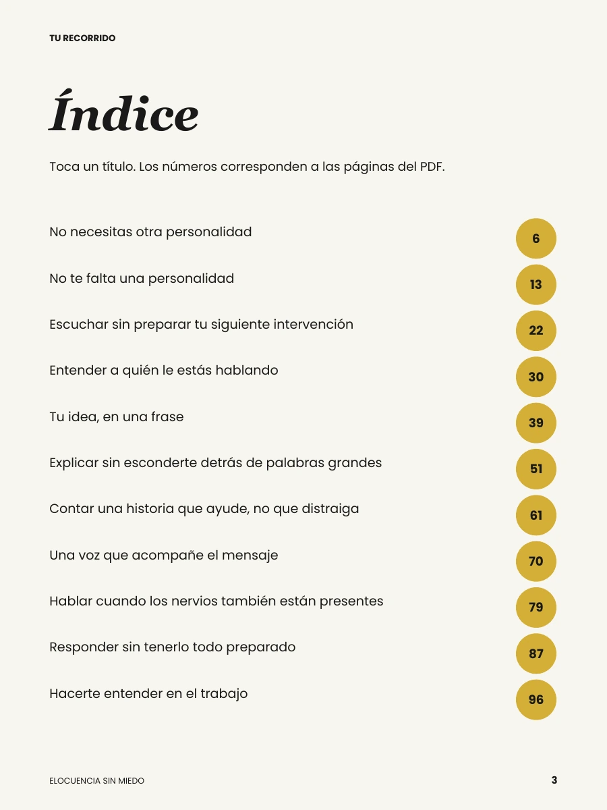
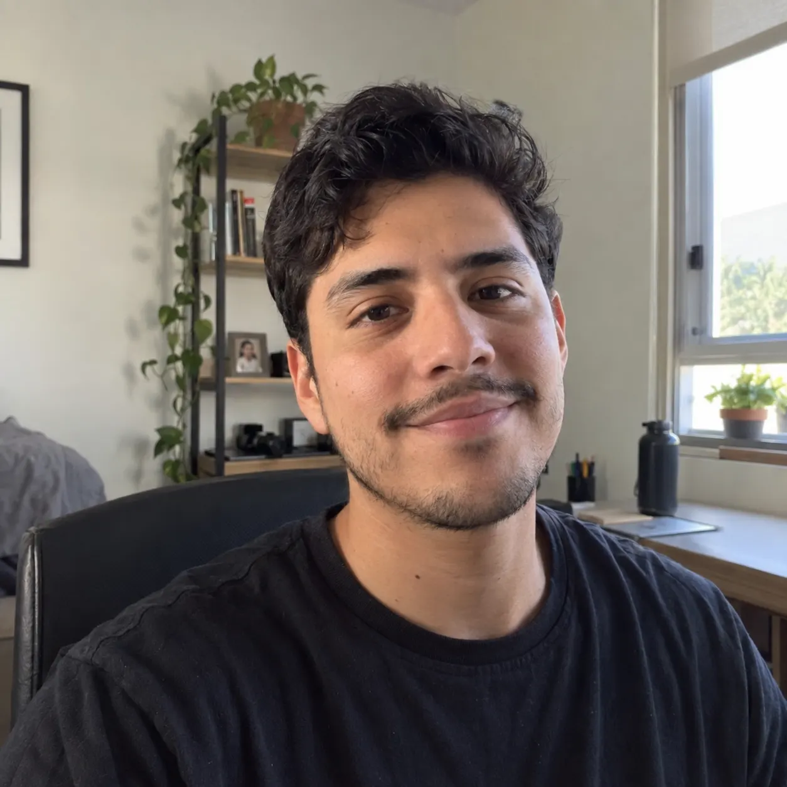
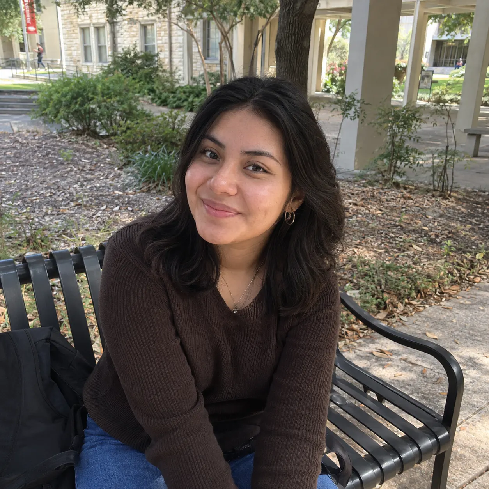
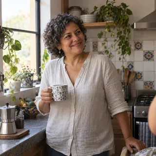
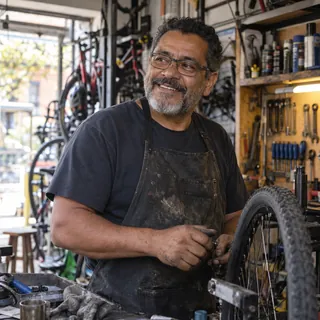

Herramientas para tu voz
Recursos
gratuitos
Ejercita tu voz, gana claridad y habla con más confianza.
Ver recursosLa voz que abre caminos
Habla mejor.
Haz que te escuchen.
Herramientas para tu voz
Ejercita tu voz, gana claridad y habla con más confianza.
Ver recursos


Una voz a la vez
Desliza para explorar más historias

Ingeniero · 26
Qué libro tan brutal. La verdad no pensé que me fuera a servir tanto, pero desde que lo empecé a leer he notado un cambio real en la forma en la que me expreso. Ahora me siento mucho más seguro hablando en público y en mi trabajo. Súper recomendado.

Estudiante · 22
Amooo este libro! De verdad me ha ayudado un montón a perder el miedo de hablar y a organizar mejor mis ideas. Los ejercicios son muy prácticos y fáciles de aplicar. Ya no me trabo tanto cuando tengo que presentar en la universidad. Me encantó.

Marketing · 29
Excelente contenido. Me gustó mucho que no se queda solo en teoría, sino que da herramientas reales para el día a día. Lo he aplicado en reuniones de trabajo y he recibido comentarios muy positivos sobre mi forma de comunicar. Vale totalmente la pena.

Emprendedora · 31
No soy de leer muchos libros, pero este sí me atrapó. Está escrito de forma sencilla, se entiende fácil y está lleno de ejemplos útiles. Me ha servido un montón para expresarme mejor en mi vida personal también. Lo súper recomiendo!
Café · 28
En el café me toca repetir el menú mil veces. Antes sentía que sonaba apurada; ahora respiro y hago pausas. Todavía me trabo con algunos nombres, pero ya no me da tanta pena.
Reuniones · 32
Yo tenía las ideas... pero en reunión me daba miedo interrumpir. Estoy ensayando una frase corta y ya. Me falta, sí, pero me sirve.

En bus · 38
Leo en el bus a ratitos. Me gustan los ejemplos porque no suenan a discurso de político jaja.

En casa · 46
Cuando presento algo en el grupo, se me va el aire. Practiqué el ejercicio de respirar y me acuerdo de aflojar los hombros. No soy experta, pero voy más tranquila.

Taller de bicis · 52
Llevo años atendiendo gente en el taller. Me quedé con lo de escuchar antes de responder; me baja un poco las revoluciones cuando alguien llega molesto.

Biblioteca · 24
Me dio risa leer en voz alta sola en casa, pero bueno, nadie estaba mirando 😅. Repetí una frase y ya no la digo como robot.

Parque · 42
Haber si algún día logro hablar sin irme por las ramas 🙈. Por ahora estoy practicando cerrar una idea antes de saltar a la otra.

Taller creativo · 39
En el centro cultural me invitaron a presentar el grupo y dije que sí antes de pensarlo mucho. Me llevé dos ideas apuntadas; con eso ya sentí piso.